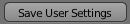

1. Requirements
In order to install and use BVTK, you will need to download if you don't have them already, two things:
the Blender application (version 2.79) and the BVTK zipped file. You just need to click on these two links
below. Don't unzip the BVTK file, if it is automatically unzipped you will have to zip it again.
get blender 2.79
download page
Once you have it, you can install Blender. It shouldn't be hard, but in case you need help,
there's a complete guide here
to solve any doubt. Before proceeding open Blender and make sure it's running without any problems.
2. Install the add-on
Since the following is the standard procedure to install every Blender add-on, you can
find online plenty of similar (and probably more detailed) guides about how to do it.
For example, if you prefer you may watch this video
on Youtube.
Open Blender
In the top bar choose
File > User Preferences

and click on the menu option. The preferences window should pop up.
In the window just opened, select the
Add-ons

section.
In the bottom part of the window, click
Install Add-on from File...

.
Search among your files for the BVTK.zip file previously downloaded, then click once again
Install Add-on from File...

near the top right corner of the window. You should see BVTK appearing in the
add-on list. Before going further, make sure you are connected to the internet, or the
next step will fail. Note that you won't need the access to the web every time you
use the software but just during this installation process.
Click on the
checkbox

next to the add-on name. You may have to wait a few seconds since
at this point the actual installation will secretly start in background.
If the tick after a while simply appears, the add-on has been successfully
installed. Alternatively, a webpage should pop up with a few indications
about how to solve your error.
In the bottom left of the window click on
save user settings
. By doing this you'll enable the add-on once for all and you won't have to enable
it each time you open Blender, which is annoying and confusing if you are new to the
software.

3. Load data
Now it's time to select your file and bring your data into blender
Search the tree for the netCDFCFReader node and find the
Click the button next to the input field, with the folder icon.
Navigate the file picker and choose your file.
Search the tree for the toBlender node and find the
Click the button, you should see the nodes changing color. Look in the console and make sure no errors are raising. At the end of the process, you should see the 3D view updating. However note that if you downloaded the netCDF file from this page you won't probably see any change. Now that you know how, you can open your own data.
Search the tree for the netCDFCFReader node and find the
FileName

property.
Click the button next to the input field, with the folder icon.
Navigate the file picker and choose your file.
Search the tree for the toBlender node and find the
Update

button.Click the button, you should see the nodes changing color. Look in the console and make sure no errors are raising. At the end of the process, you should see the 3D view updating. However note that if you downloaded the netCDF file from this page you won't probably see any change. Now that you know how, you can open your own data.